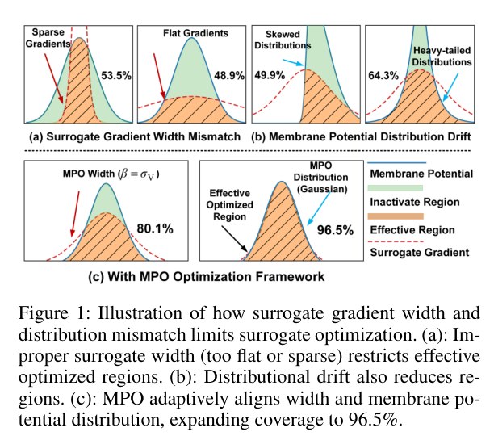
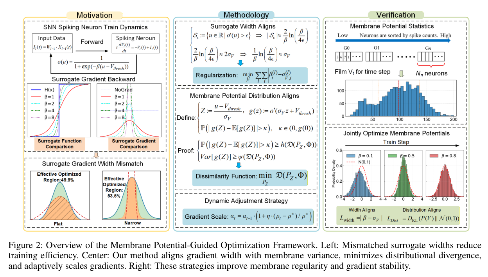
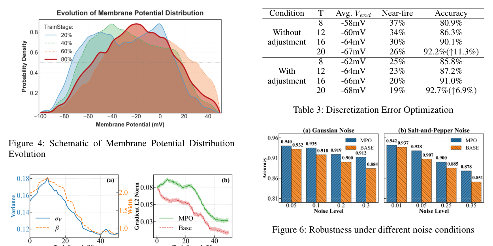

Paper brief
Optimization Method for Surrogate Function in Spiking Neural Networks Based on Membrane Potential Distribution
Proceedings of the AAAI Conference on Artificial Intelligence, 40(30) · 25718-25726
MPO dynamically adjusts surrogate gradients according to membrane potential distributions for more stable and efficient SNN training.
Research question
Direct SNN training is affected by non-differentiable spikes, membrane potential drift, and temporal discretization errors. Fixed surrogate functions can easily mismatch neural activity distributions.
Method
MPO regularizes membrane potential distributions with KL divergence, aligns surrogate width with membrane statistics, and introduces a discretization-error metric with correction to improve temporal gradient propagation.
Technical route
- Membrane statistics
Track membrane potential distributions and drift during training.
- Distribution loss
Use KL divergence to stabilize membrane dynamics.
- Adaptive width
Match surrogate-gradient width with membrane variance.
- Error correction
Measure and correct spike discretization errors.
Evidence
- CIFAR-10
- 94.76%
Top-1 accuracy reported in the paper.
- CIFAR-100
- 74.20%
Direct SNN training under MPO.
- ImageNet
- 65.70%
Scalable result with improved stability and efficiency.


Surrogate Gradient Width Mismatch
The schematic compares effective optimization regions for surrogate functions and gradients.
The paper starts from the observation that fixed surrogate widths can misalign with membrane-potential distributions.
Source: Proceedings of the AAAI Conference on Artificial Intelligence, 40(30), 25718-25726 (2026).
View full-size figure

MPO Framework Overview
The overview organizes motivation, methodology and verification around width alignment, distribution alignment and dynamic scaling.
This figure is the fastest way to understand how MPO uses membrane statistics to tune SNN training.
Source: Proceedings of the AAAI Conference on Artificial Intelligence, 40(30), 25718-25726 (2026).
View full-size figure

Stability and Robustness Verification
The results show training curves, hyperparameter sensitivity and membrane-potential distribution changes.
The emphasis is not only higher accuracy, but more stable training and lower sensitivity to surrogate-width choices.
Source: Proceedings of the AAAI Conference on Artificial Intelligence, 40(30), 25718-25726 (2026).
View full-size figureTakeaway & limitations
The effective width of surrogate gradients should match membrane potential statistics dynamically instead of being fixed globally.
It reframes surrogate-function design from empirical hyperparameter tuning to a dynamics-aware optimization problem.
- Analyzes how surrogate-width and membrane-distribution mismatch shrinks effective optimization regions.
- Introduces membrane-potential-guided surrogate optimization for stable dynamics and gradient coverage.
- Reports strong results on CIFAR-10, CIFAR-100, and ImageNet.
A useful reading line is: membrane distributions determine gradient effectiveness; therefore surrogate functions should adapt to those distributions.
Citation
Qi Sun, Zhen Cao, Kaige Geng, Ziyi Zhang, and Biao Hou. Optimization Method for Surrogate Function in Spiking Neural Networks Based on Membrane Potential Distribution. Proceedings of the AAAI Conference on Artificial Intelligence, 2026, 25718-25726.
Download BibTeX